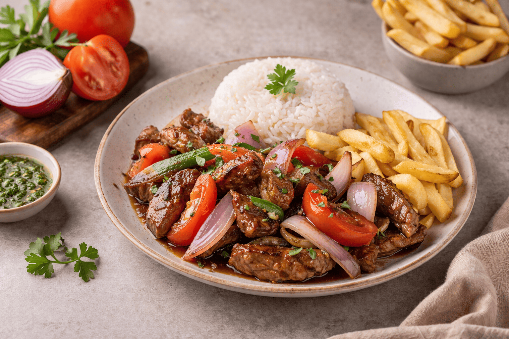

Lomo Saltado

Descripción
El lomo saltado es uno de los platos más representativos de la cocina peruana y un ejemplo claro del chifa criollo.
Combina lomo de res salteado al wok con cebolla, tomate y ají amarillo, y se sirve con papas fritas y arroz blanco.
Ingredientes
- 500 g de lomo de res en tiras
- 2 cebollas rojas en gajos
- 2 tomates en gajos
- 1 ají amarillo en tiras
- 2 dientes de ajo picados
- 3 cucharadas de sillao
- 1 cucharada de vinagre
- Aceite, sal y pimienta al gusto
- Papas fritas, arroz blanco y culantro picado para servir
Instrucciones
- Sazonar las tiras de lomo con sal, pimienta y ajo.
- Calentar bastante aceite en un wok o sartén grande a fuego alto.
- Saltear la carne en tandas hasta que dore y reservarla.
- En el mismo wok, saltear la cebolla, el ají amarillo y el tomate por pocos minutos, sin dejar que se deshagan.
- Regresar la carne y agregar el sillao y el vinagre. Mezclar con movimientos rápidos.
- Incorporar las papas fritas al final para que conserven su textura.
- Servir de inmediato con arroz blanco y decorar con culantro picado.